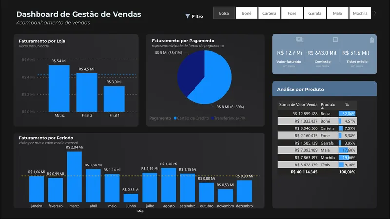

Projetos
Dashboards em Power BI, análise exploratória de dados e automações em Python. Cada projeto traz o problema, os dados, as ferramentas e o resultado.
-

Dashboard de Gestão de Vendas
Desempenho de vendas por loja, forma de pagamento, período e produto em um só painel.
- Objetivo
- Monitorar e analisar o desempenho de vendas de diferentes unidades e produtos, apoiando decisões estratégicas baseadas em dados.
- Dados
- Faturamento por loja (Matriz e Filiais), tipo de pagamento, período e produto, com filtro por produto.
- Ferramentas
- Power BI.
- Resultado
- Painel com os principais indicadores do negócio. As vendas somam R$ 40,1 milhões, e Bolsas lideram com 32,06% do total. Com o filtro Bolsa, o painel mostra R$ 12,9 milhões faturados, 61,39% no cartão de crédito e pico em março (R$ 2,04 milhões).
-
Disponibilidade acumulada77,69%Qualidade99,32%
Quantidade produzida: 3.084.251. Rejeitada: 21.076.
Dashboard de Produção
Eficiência, qualidade e disponibilidade da produção, com filtros por operador e período.
- Objetivo
- Oferecer uma visão abrangente do desempenho produtivo, facilitando a análise de gargalos, a avaliação da qualidade dos processos e a otimização de recursos.
- Dados
- Quantidade produzida e rejeitada, horas produtivas e horas paradas, por operador e período.
- Ferramentas
- Power BI: medidas para disponibilidade, qualidade e métricas acumuladas; cards, medidores e gráfico de barras.
- Resultado
- Indicadores acumulados em um só painel, com disponibilidade de 77,69% e qualidade de 99,32%, filtráveis por operador e período.
-
r = 0,85
correlação entre PIB e população em 5.570 municípios brasileiros
Análise Exploratória de Dados Municipais
Aspectos demográficos, econômicos e sociais de 5.570 municípios brasileiros.
- Problema
- Entender como a análise de dados pode apoiar o planejamento público e decisões informadas.
- Dados
- 5.570 municípios brasileiros, com variáveis como população, PIB, PIB per capita, IDHM, região e porte.
- Técnicas
- Checagem de dados, análise de frequência, tendência central, correlação, boxplots e gráficos de pizza.
- Resultado
- Forte assimetria populacional (média de 37 mil e mediana de 11,5 mil habitantes) e correlação forte entre PIB e população (r = 0,85).
-
Dois painéis no mesmo relatório:
- Comportamento de compra
- Perfil dos clientes
Monitoramento Estratégico de Vendas, Custos e Lucros
Comportamento de compra e perfil dos clientes por salário, escolaridade, estado civil e canal de compra.
- Objetivo
- Oferecer uma visão completa do desempenho financeiro, permitindo identificar tendências, otimizar estratégias de envio e maximizar a lucratividade em diferentes mercados e categorias de produtos.
- Dados
- Clientes com salário anual, estado civil, escolaridade, filhos e adolescentes em casa, canais de compra e país.
- Ferramentas
- Power BI: correlação, diagrama de Sankey e filtros por país.
- Resultado
- Padrões de compra identificados: clientes com salários maiores tendem a gastar mais, e características demográficas influenciam o consumo, o que gera insights para campanhas de marketing.
-
Robô de Automação de Tarefas
Cadastro automático de produtos em um sistema online a partir de uma base CSV.
- Problema
- Automatizar uma tarefa repetitiva: o cadastro de produtos em um sistema online.
- Dados
- Base de produtos em CSV com código, marca, tipo, categoria, preço unitário, custo e observações.
- Ferramentas
- Python, PyAutoGUI e Pandas.
- Resultado
- O robô faz login, percorre a base e preenche e envia cada cadastro até o fim da lista.
-

Programa para Junção de Arquivos PDF
Combina os PDFs de uma pasta, em ordem alfabética, em um único documento.
- Problema
- Consolidar vários documentos em um único arquivo, principalmente quando há um grande volume de PDFs.
- Dados
- Os arquivos PDF presentes em uma pasta.
- Ferramentas
- Python e PyPDF2 (PdfMerger).
- Resultado
- Gera o arquivo “PDF Final.pdf” com todos os documentos em ordem alfabética.
-

Chat para Empresas
Aplicativo de chat em tempo real com Python e Flet, com feedback visual de mensagens e novas entradas.
- Para que serve
- Permitir que vários usuários conversem em uma sala de chat em tempo real.
- Ferramentas
- Python, Flet e o sistema PubSub para sincronizar as mensagens.
- Resultado
- Chat com interface simples e funcional e notificações visuais sobre mensagens e novas entradas.